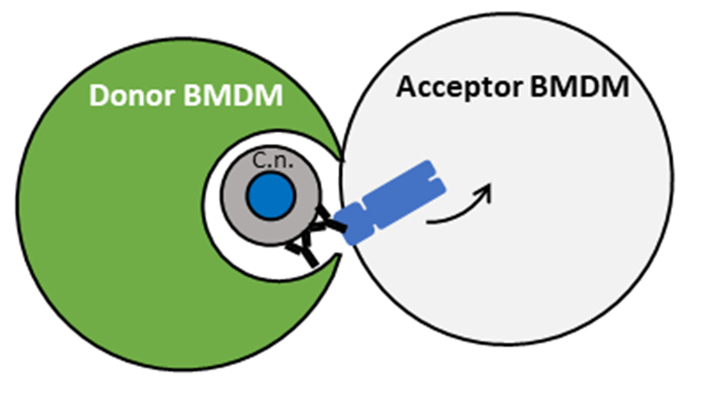
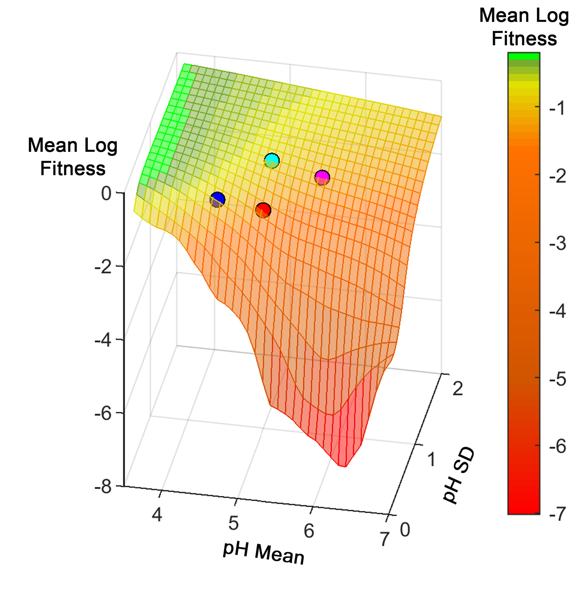

Quigly Dragotakes, Ph.D.
Postdoctoral researcher in the Casadevall Lab
Chief Scientific Officer of MelaTech LLC.


I enjoy working with people and helping see their vision through. I'm a jack-of-trades able to combine molecular biology experimental design with programming/data analysis, repairing or building needed instruments, and innovating new setups when required. I also have access to a 3D printer and experience with modeling and printing. If you have projects or ideas you would like to collaborate on feel free to get in contact. Some examples of projects and skills follow:
I received my B.S. Biochemistry from Ithaca College in 2014 during which I worked in the organic synthesis lab of Scott Ulrich, PhD studying bacterial quorum sensing generating and assaying potential small molecular inhibitors of the V. fischeri quorum sensing system. I also worked with Te Wen-Lo, PhD using CRISPR/Cas to study gene compensation in C. briggsae.

I worked as a Research Assistant in the Greengard Lab at The Rockefeller University from 2014-2016 studying late onset familial Alzheimer's Disease. Using RNAseq and collaborating with multiple human genome research groups we identified a gene potentially involved in AD pathology. I cloned the gene and many isoforms/cleavage products into vectors to analyze in transfected cell culture as well as raising and maintaining KO mouse colonies and generating knockdown mice via lentiviral vector brain injection.
In 2016 I matriculated to the Johns Hopkins Bloomberg School of Public Health Molecular Microbiology and Immunology PhD program. I joined the laboratory of Arturo Casadevall and began researching host-pathogen interactions between C. neoformans and macrophages. I was involved in many areas of research, but my thesis specifically focused on establishing a macorphage phagolysosome acidification betting strategy, elucidating the mechanism of yeast transfer between macrophages, and working to link the two by showing cellular stress as a trigger for the transfer process.
During my time in the Casadevall lab I also became involved with MelaTech LLC. I managed to send several melanin samples to the ISS and generate a few patents for practical uses of melanin biocomposites. We recently secured significant funding sources which is why I decided to work as a postdoc in the Casadevall lab to remain close to and involved in MelaTech as the CSO.
I elucidated the mechanism by which C. neoformans can non-lytically transfer between host macrophages. Published in the Journal of Immunology.
I discovered that macrophages hedge their bets in terms of phagolysosomal pH at the cellular level. Using a stochastic acidification method the macrophages will increase the variation in possible final pH and decrease the variation in long term population fitness. Published in the Journal of Clinical Investigation

I'm as capable a programmer as you can get without finding someone with an actual CS background. I spend most of my time in R, python, and MATLAB but am comfortable with anything regarding computers and good at finding relevant Stack Overflow threads when I need to learn a new application.
For example, I wrote an image analysis script using a combination of Python and MATLAB to automatically measure C. neoformans capsule and cell body sizes from India Ink slides. These measurements are tedious and time consuming to do manually, whereas my script allows rapid measurement of thousands of cells with minimal labor. Published in the Journal of Visualized Experiments.
My work with MelaTech LLC. centers around characterizing melanin and developing practical uses for the biocompound. We have several patents relating to the protective capabilities of this fascinating molecule and work closely with NASA to develop new space technologies. Several of our samples have been sent to the ISS for further testing.

I dabble in basic web design. I made this site as well as the MelaTech LLC. website.
Using the GPT-2 architecture I trained a bot on ~10k open access PubMed research articles. The current iteration is a bot capable of generating a paper (title, abstract, intro, methods, results, discussion) and tweets the resulting paper. The git repo and twitter account are public.

Using a bag of words model I trained a bot to guess whether research articles were from NSC or not based only on the title. Surprisingly the categorizer has an accuracy from mid-70% to low-80%.

This page is a constant work in progress that I keep adding to in my spare time or when I get bored.